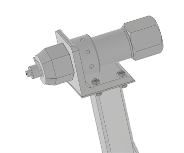

Beütő állomás

A beütő állomás a hőkezelt hengerfejek megjelölésérét felel. Az álványzata valahol a kaloda kirakodó robot pályája környékére kell beépítenia cellába, hogy minimális legyen az időveszteség a megjelölés folyamán. Az álványzatra fölkerülhet még QR kód olvasó ipari kamera vagy egyéb az alkatrész követéshez használt eszköz, hogy a cella és ezzel az üzem folyamtai is jobban nyomonkövethetők és irányíthatók legyenek. A beütő munkahenger egy pneumatikus rövid löketű egyszeres működésű munkahenger, tehát a levegő nyomása a munkahengert egy rugó ellenében téríti ki és amikor elér egy nyomásszintet egy szelep leengedi a nyomaást a munkahengerből így hirtelen kicsapódik és a munkahenger végén levő (jelenleg nincs a képeken) marker beleüti a jelet az öntvénybe. Az ütés ereje 1000 N-os nagyságrendben mozog. Jelen munkahenger nagyjából 3000 N erővel üt ebből kifolyólag jelentős terhelésnek van kitéve mind az állványa mind a megfogók, amik rögzítik a munkahengert a roboton szintén pneumatikus hatásmechanizmussal.
| FŐOLDAL | Rázóasztal | Kaloda emelő | Megfogó |